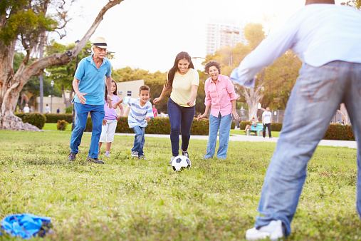
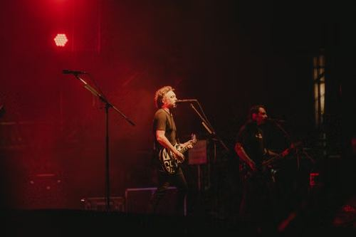
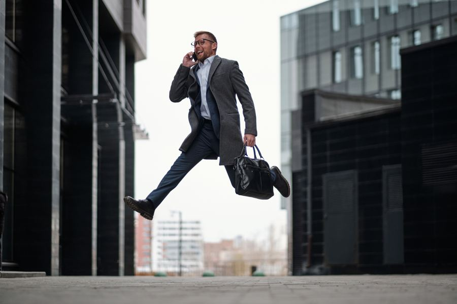

Aptis Speaking
Part 1: In this part, I am going to ask you three short questions about yourself and your interests. You will have 30 seconds to reply to each question.
1. Please describe the area where you live.
=> I live in a village in the countryside. It is small but quiet and peaceful. The weather is very nice.. the people are friendly and kind. The food is delicious and healthy. I really like my hometown. Sometimes my neighbors invite me over for tea and a chat. I feel proud to call this place my home.
2. Who is your favorite movie actor or actress?
=> My favorite actor is Jackie Chan. He is from Hong Kong. He is very handsome. I really like his movies because they are so funny. I have watched many of his action movies with my family. He always makes me laugh with his funny fighting scenes.
3. Tell me about your job.
I am a doctor. I work for a hospital in Hanoi. I love my job because I can help many people. Also, I can take care of my family. Every day I meet new patients, and it makes me feel useful. Sometimes the job is tiring, but I feel happy when patients get better.
Part 2: In this part, I'm going to ask you to describe a picture. Then I will ask you two questions about it. You will have 45 seconds for each response.
 |
1. Describe the picture => In this picture, I can see a family in a park. They play football. They are wearing casual clothes a look happy. I think they are enjoying their time. Behind them, I can see them building and trees. The weather is very nice and perfect for outdoor activity. I like this picture because it reminds me of my family. |
2. How often do you exercise or play sports, and who do you usually do it with?
=> I often play football with my friends in the park near my house. We often play after work or at the weekend. Sometimes I do morning exercise with my children in the garden. Here I can enjoy fresh air . Playing football helps me stay in shape and relieve stress. My children also enjoy exercising with me, and it brings our family closer.
3. What are the health benefits of participating in sports?
=> there are some benefits of playing expose. First, it is fun. It helps people relax and share happy moments with friends. Second, it is good for our health. It helps people improve their health, keep fit and prevent health problems. Last, we can make friends with other people. For example, I feel much more energetic since I started exercising regularly. It also helps me sleep better at night.
Part 3: In this part, I'm going to ask you to compare two pictures, and I will then ask you two questions about them. You will have 45 seconds for each response.
1. Tell me what you can see in these two pictures.

=> The two pictures show people enjoying music in different places.
In the first picture, I can see our family playing the piano at home together. They look so happy.
In the second picture, I can see two people on the stage in a concert. They are singing and playing the guitar. I think many people are listening to them. The stage is dark.
The people in both pictures love music. Music brings people together no matter where they are. It always creates a joyful and relaxing atmosphere.
2. Where do you like to play music? Why?
=> both places have different attractions, depending on people’s interests. Some people like playing music at home because it is comfortable. For me, I prefer playing music in a concert because it is more interesting. Playing at home lets me relax without any pressure. Performing on a stage would also be an exciting experience for me.
3. How does playing music in different locations bring different feelings?
=> Different locations bring different feelings. Playing music at home feels relaxing, while playing on a stage feels exciting. For me, playing at home feels cozy and safe. Being on a stage would make me feel nervous but proud.
Part 4: In this part, I'm going to show you a picture and ask you three questions. You will have one minute to think about your answers before you start speaking. You will have two minutes to answer all three questions.

Tell me about a time when you were in a hurry.
How did you feel?
If you're running late for something, how do you typically feel?
=> Regarding the first question, today I'm going to talk about a time when I was in a hurry. Last month, I woke up late for work. I got ready quickly and took a taxi to the office. I was afraid of being late for an important meeting. Luckily, everything went well in the end.
Turning to the second question, I felt nervous because I did not want to be late. I was happy when I arrived on time. My heart was beating fast the whole way there.
About the last question, if I am running late, I usually feel worried and stressed. I always try to stay calm and get there as quickly as possible. I also try to plan my time better so this does not happen again.